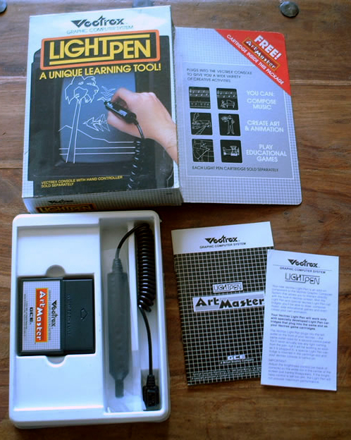
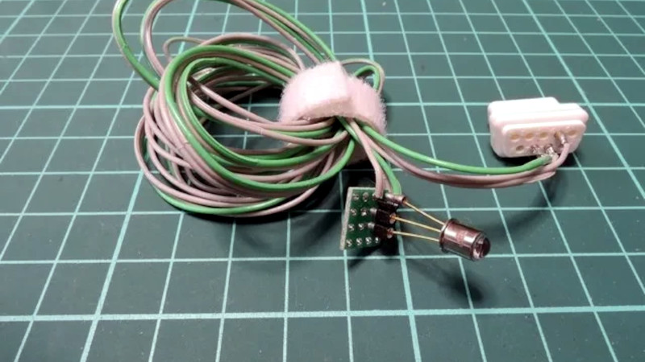

Vectrex Light Pen
The light pen that shouldn't have worked — a bullseye-tracking hack on a vector display

Overview
The Vectrex Light Pen was a peripheral for the Vectrex vector-display game console, released in limited quantities in early 1984. The Vectrex was the only home console to use a vector CRT — it drew images as lines of light rather than scanning a full raster grid — which meant that conventional light pens (which work by timing the passing electron beam against the screen refresh rate) could not function on it at all.
GCE engineer John Ross invented a clever workaround: the software drew a spinning, expanding bullseye pattern centered on the pen's last known position. When the pen's photodetector sensed the beam crossing one of the concentric rings, the system triangulated the pen's new position and re-centered the bullseye. If the user moved too fast, the pen 'lost lock' and the user had to re-acquire by aiming at the crosshair. This turned the Vectrex from a games-only console into a direct-manipulation creative platform — bundled software included Art Master (drawing), AnimAction (frame-by-frame animation with saveable artwork), and Melody Master (music composition by drawing notes on a staff).
The Light Pen arrived at the end of the Vectrex's life — demonstrated at the Nuremberg Toy Fair in February 1984, just weeks before Milton Bradley discontinued the entire line. Only a few thousand units are believed to exist. An unreleased game, Mail Plane, used the pen for flight control and map navigation; its ROM was dumped and released to the community in 2013.
Deep dive
A raster-scanning CRT draws its image by sweeping an electron beam from top to bottom, left to right, 60 times per second. A conventional light pen detects the passing beam and times the interval from the start of the frame to calculate position — simple geometry. The Vectrex used a random-scan vector display: the beam only drew lines where needed, jumping from one endpoint to the next. There was no full-screen raster scan to time against. This rendered conventional light pen technology fundamentally incompatible with the Vectrex's display.
John Ross's solution inverts the tracking paradigm. Instead of the pen passively listening for a predictable beam, the software actively searches for the pen. The algorithm works in two phases: (1) Acquisition — the software draws a crosshair; the user aims the pen at it and presses a button. (2) Tracking — the software draws a rapidly expanding or spinning bullseye pattern of concentric rings centered on the pen's last position. As the user moves the pen across the screen, the photodetector fires each time the vector beam crosses one of the rings. By tracking which ring and at what angle the crossing occurred, the software calculates displacement from the bullseye center and re-centers the pattern. This is a closed-loop sensor-fusion algorithm — the computer hunts for the pen rather than waiting for the pen to report. The method is analogous to modern optical tracking and even early eye-tracking systems.
The Light Pen contained a photodetector and transistor-based pulse-stretching circuits. John Ross prototyped the first unit in a Marks-A-Lot felt-tip marker pen case. The production pen plugged into controller port 2 of the Vectrex (the left port), while a standard controller occupied port 1 for menu navigation and tool selection. The pen reported light detection as a 'button 4' press on the controller input. It was sold only in the USA.
Three cartridges shipped with the Light Pen. Art Master (VT 3601, programmer Richard Moszkowski, 4K ROM) was the pack-in drawing program offering line-art tools, fill patterns, and basic frame-by-frame animation. AnimAction (VT 3604, 8K ROM + 2K RAM) added built-in clip art and the ability to save multi-frame animations — one of very few Vectrex cartridges with onboard RAM. Melody Master (VT 3602, 8K ROM) turned the console into a music workstation: players drew notes on a musical staff with the pen and the Vectrex played the composition through its AY-3-8912 sound chip, which supported three simultaneous channels.
Mail Plane (VT 3603, fully completed but never shipped) was the only true game requiring the Light Pen. Players piloted a plane delivering mail to US cities, using a standard controller for flight (throttle/steering) and the Light Pen for route mapping, package loading, and city selection. Screenshots appeared on the Light Pen's retail packaging in 1983, teasing a game that wouldn't reach the public for thirty years. Two prototype cartridges surfaced around 2000; a third appeared on eBay in 2013, purchased by Chris Romero with community support. The ROM was dumped and released publicly.
The Light Pen was demonstrated at the Nuremberg Toy Fair in February 1984, just before Milton Bradley discontinued the entire Vectrex line. Only a few thousand units are believed to have been manufactured, making it one of the rarest Vectrex peripherals. A boxed Light Pen with all three cartridges sold for approximately $300 in 2010. The modern Vectrex homebrew community has created replacement light pens and new software, and the original tracking algorithm is documented in Rob Mitchell's Light Pen FAQ. The device remains a brilliant footnote in the history of pointing devices — a purely software-defined solution to a fundamental hardware incompatibility.
Team & pioneers
- John Ross. Inventor of the Vectrex Light Pen. Also conceived the Vectrex itself (after spotting a surplus 1-inch CRT) and designed the Vectrex 3D Imager. Hardware engineer at Western Technologies/Smith Engineering. Prototyped the pen in a Marks-A-Lot marker case.
- Richard Moszkowski. Programmer of Art Master, the pack-in Light Pen cartridge (4K ROM). Also programmed Clean Sweep for the Vectrex.
- Jay Smith. Head of Smith Engineering/Western Technologies. Guided the Vectrex project and previously designed the Microvision handheld.
- Gerry Karr. Designed the Vectrex's computer and vector generator hardware.
- Tom Sloper. Coined the name 'Vectrex' (from 'Vector-X'). Part of the Western Technologies team.
- Milton Bradley. Acquired GCE in early 1983; manufactured and distributed the Vectrex and Light Pen; discontinued the line in February 1984.
Media

Sources
- Vectrex Museum: Light Pen page (primary)
- PlayVectrex: Light Pen FAQ v1.1 (Rob Mitchell)
- Hackaday: Vectrex Light Pen Works Without A Raster (2023)
- Wikipedia: Vectrex (Light Pen section)
- Vectrex Wiki: John Ross (inventor)
- Game Developer: A History of Gaming Platforms — The Vectrex (Barton & Loguidice, 2007)
- Retro Game Reviews: Mail Plane (unreleased Light Pen game)
- Vectrex FAQ v5.2 (Gregg Woodcock / BaronVR)